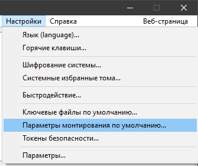
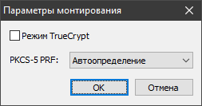

Начиная с версии 1.0f-2 стало возможным указывать алгоритм PRF и режим TrueCrypt выбранными по умолчанию в окне пароля.
Как показано ниже, выберите пункт Параметры монтирования по умолчанию в меню Настройки:

Появится следующее окно:

Внесите нужные вам изменения и нажмите OK.
Выбранные значения затем будут записаны в основной конфигурационный файл VeraCrypt (Configuration.xml), что сделает их постоянными.
Во всех последующих диалоговых окнах запроса пароля будут использоваться значения по умолчанию, выбранные ранее.
Например, если в окне параметров монтирования по умолчанию вы установите флажок Режим TrueCrypt и выберете SHA-512
в качестве PRF, то последующие окна ввода пароля будут выглядеть следующим образом:

Примечание. Параметры монтирования по умолчанию могут быть переопределены в командной строке ключами /tc и /hash, которые всегда имеют приоритет.